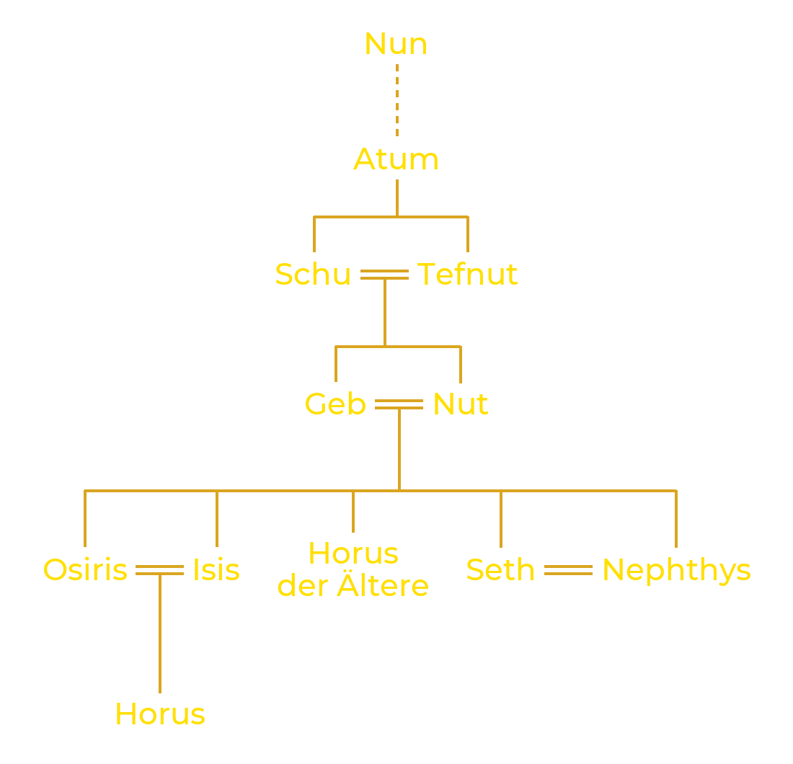

Heliopolis, die „Sonnenstadt“ der Griechen, hieß auf Ägyptisch Iunu. Vor den Toren des heutigen Kairo gelegen, war sie seit dem Alten Reich das große Zentrum des Sonnenkults, und ihre Priester schufen die am weitesten verbreitete Schöpfungserzählung Ägyptens.
Am Anfang gab es nur einen grenzenlosen Ozean, reglos und in Finsternis getaucht: den Nun. Aus diesen Wassern stieg Atum empor, dessen Name zugleich „der Vollständige“ und „der noch nicht Seiende“ bedeutet: Er trug alles in sich, was einmal sein würde. Atum erschuf sich selbst, indem er sich seiner eigenen Existenz bewusst wurde. Dann ließ er einen Erdhügel aus den Wassern auftauchen, den Benben, um darauf stehen zu können. Manche Texte erzählen, er sei dort in Gestalt des Benu erschienen, eines reiherähnlichen Vogels, den die Griechen später mit dem Phönix verglichen.
Allein und ohne Gefährtin brachte Atum aus sich selbst ein erstes Götterpaar hervor. Je nach Fassung vereinigte er sich mit seiner eigenen Hand, oder er spuckte und nieste: Aus seinem Niesen entstand Schu, der Gott der Luft und des Lichts, aus seinem Speichel Tefnut, die Göttin der Feuchtigkeit. Bruder und Schwester, waren sie zugleich Mann und Frau und bilden das erste Paar der Schöpfung.
Mit ihnen trat Maat in Erscheinung, die Ordnung der Welt. Mehr als eine Göttin ist Maat das Prinzip, das das Universum zusammenhält: die Gerechtigkeit, die Wahrheit, der regelmäßige Lauf der Sonne und der Jahreszeiten. Ihr steht Isfet gegenüber, die Unordnung, die die Welt unablässig in das Chaos des Anfangs zurückzuwerfen droht.

Aus der Verbindung von Schu und Tefnut gingen Geb, die Erde, und Nut, der Himmel, hervor. Beide waren so eng umschlungen, dass zwischen ihnen nichts bestehen konnte. Auf Befehl Atums schob sich Schu zwischen seine Kinder und hob Nut mit ausgestreckten Armen empor, während Geb am Boden liegen blieb. So öffnete sich der Raum, in dem die Luft zirkuliert, das Licht leuchtet und das Leben gedeihen kann.
Über die Erde gewölbt, berührt Nut ihren Gatten nur noch mit den Finger- und Zehenspitzen. Die Sonne wandert tagsüber über ihren Körper; jeden Abend verschluckt sie sie, und jeden Morgen bringt sie sie neu zur Welt. Der Nun aber wurde über die Grenzen dieser Welt hinausgedrängt, die er bis heute wie eine stille Bedrohung umgibt.

Auch die Menschen verdanken ihr Dasein dem Demiurgen. Eine Erzählung berichtet, Schu und Tefnut hätten sich als Kinder in der Finsternis des Nun verirrt. Atum sandte sein Auge aus, um sie zu suchen. Als er sie zurückkehren sah, weinte er vor Freude, und aus seinen Tränen entstanden die ersten Menschen.
Die Sargtexte, Totentexte des Mittleren Reiches (um 2000–1700 v. Chr.), lassen den Schöpfer sagen: „Die Menschen sind die Tränen meines Auges.“ Die Erzählung beruht auf einem Wortspiel: Auf Ägyptisch heißt „Tränen“ remyt und „Menschen“ remetch.
Der ägyptische Kalender hatte zwölf Monate zu dreißig Tagen, also 360 Tage. Nach einer von Plutarch überlieferten Legende hatte Re, aus Furcht, gestürzt zu werden, Nut verboten, an irgendeinem Tag des Jahres zu gebären. Thot, der Gott der Weisheit, kam ihr zu Hilfe: Er spielte mit dem Mond Würfel und gewann ihm einen kleinen Teil seines Lichts ab, genug für fünf zusätzliche Tage außerhalb des Jahres. An diesen Tagen konnte Nut endlich ihre Kinder zur Welt bringen.
Diese fünf Tage heißen „Epagomenen“, nach dem griechischen epagomenai hēmerai, den „hinzugefügten Tagen“. An jedem wurde ein Gott geboren: am ersten Osiris, am zweiten Horus der Ältere (nicht zu verwechseln mit Horus, dem Sohn von Isis und Osiris), am dritten Seth, am vierten Isis und am fünften Nephthys. Die Ägypter hielten diese Tage für gefährlich, besonders den dritten, den Tag von Seths Geburt.

Die Theologen von Heliopolis fassten diese Götter zu einer Gruppe von neun zusammen, der Neunheit, die die Kräfte vereint, die für eine geordnete Welt nötig sind: den Demiurgen Atum, seine Kinder Schu und Tefnut, seine Enkel Geb und Nut und deren Kinder mit Ausnahme von Horus dem Älteren, also die beiden Paare Osiris und Isis, Seth und Nephthys. Atum, oft unter dem Namen Re-Atum mit Re verschmolzen, steht an der Spitze dieser göttlichen Familie.
Die Schöpfung hat den Nun nicht verschwinden lassen, sondern nur zurückgedrängt. Alles, was nicht erschaffen wurde, besteht an seinen Rändern fort und bedroht die bestehende Ordnung. Die furchtbarste dieser Mächte ist Apophis, eine riesige Schlange, die aus den Urwassern hervorging. Jeden Abend, wenn die Sonne den Taghimmel verlässt, bricht ihre Barke für zwölf Stunden in die Welt der Nacht auf, und Apophis versucht, sie zu verschlingen. Wie Atum wurde auch Apophis nie erschaffen: Er kann daher nicht vernichtet, sondern nur zurückgeschlagen werden, Nacht für Nacht, damit die Sonne im Morgengrauen wiedergeboren werden kann.